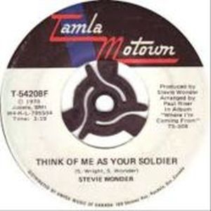
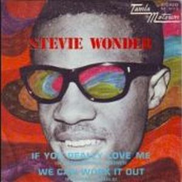

Where I'm Coming From Is an album imbued with mystical suggestions and had the collaboration of the just married Syreeta Wright. Sound more elaborate and lyrics with more care, resulting in extraordinary ballads like "Think of Me as Your Soldier", refreshing pop songs like "If You Really Love Me", grabbing soul songs like "Never Dreamed You'd Leave in Summer", sublime musical harmonies such as "Sunshine in Their Eyes" and a set of songs that shine a very high level.
It is a first album packed full of authentic Stevie Wonder. It is the end of his contract with Motown and join the discussion with Berry Gordy for artistic control. A album with absolute freedom to experiment, unhurried. Started in Detroit with session musicians of Motown, The Funk Brothers, and finished on his own in New York.
It's Stevie's last album without using synthesizers, but it was the beginning of a great ambition with which he will get his reward in the future ...

